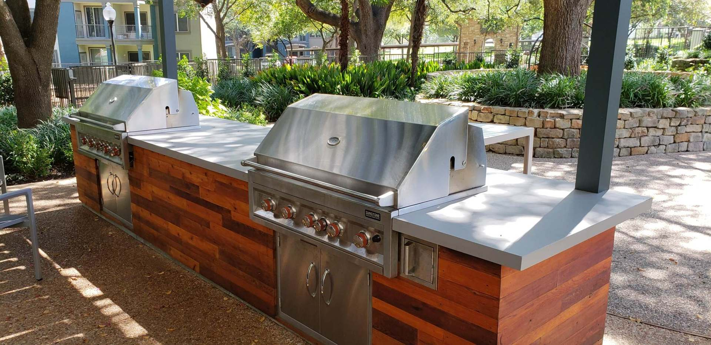
Design & Build
Designed on paper. Built by the same people.
Landscape design, construction and licensed irrigation from one Georgetown firm, so nothing gets lost between the plan and the crew.
Landscape Design
See the finished space before a shovel goes in.
Our designers turn your goals into buildable plans using 2D master plans, 3D graphics and even video, so you can weigh every choice before construction starts.
- 2D master plans & planting schedules
- 3D renderings and video walkthroughs
- Pedestrian flow, drainage & grading
- Texas-native, water-wise plant palettes
- Lighting and overhead-structure layout
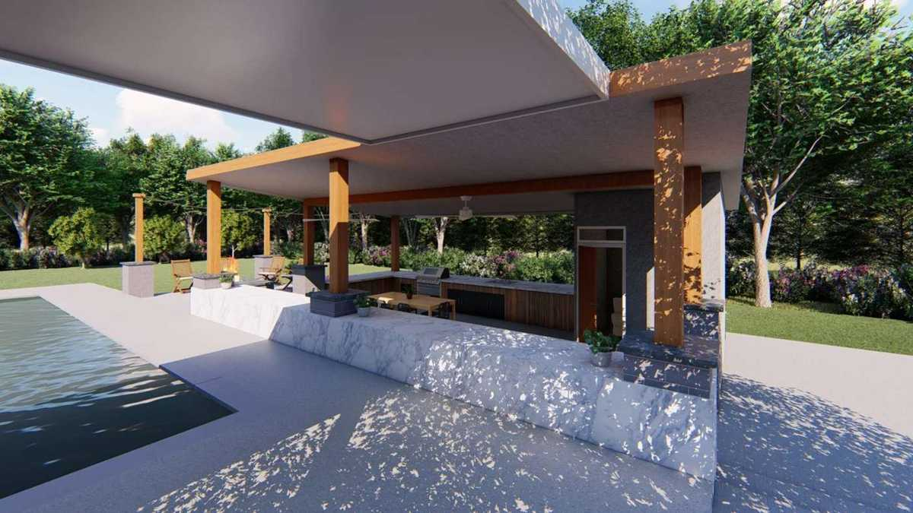
Landscape Construction
The plan that gets drawn is the plan that gets built.
Our in-house crews build everything proposed in the design and manage the moving parts, with weekly progress reports and photos until the final walkthrough.
- Patios, pavers & flagstone
- Seat walls & retaining walls
- Outdoor kitchens, BBQs & fire pits
- Composite and cedar decks
- Water features & pool surrounds
- Artificial turf & putting greens
- Landscape lighting
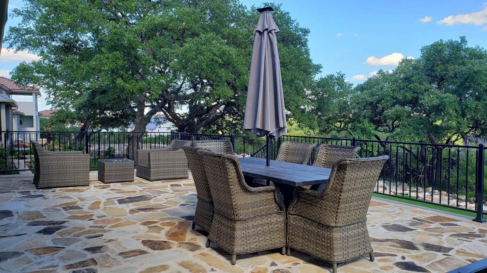
Irrigation
The right water, in the right place, on Texas terms.
Finch is a licensed irrigator (LI-0030113). We design and install new systems, modify existing ones and assess systems that are wasting water.
- New system design & installation
- Modifications to existing systems
- System assessments
- Drip zones for native beds
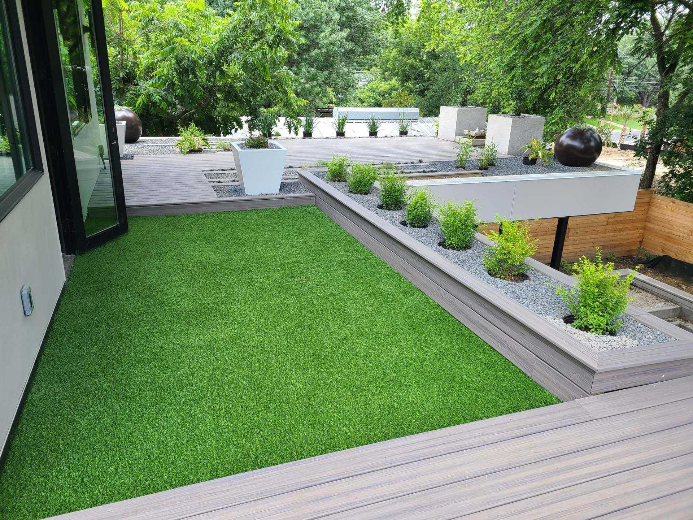
Design deliverables
What you see before we build.
Every plan is drawn to scale with a planting schedule, and larger projects get 3D concepts so you can judge the space, not just the drawing. Browse more in our projects.
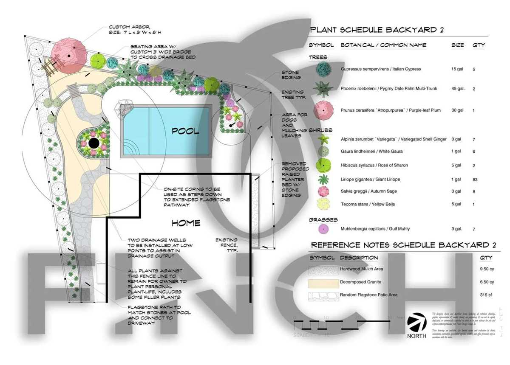
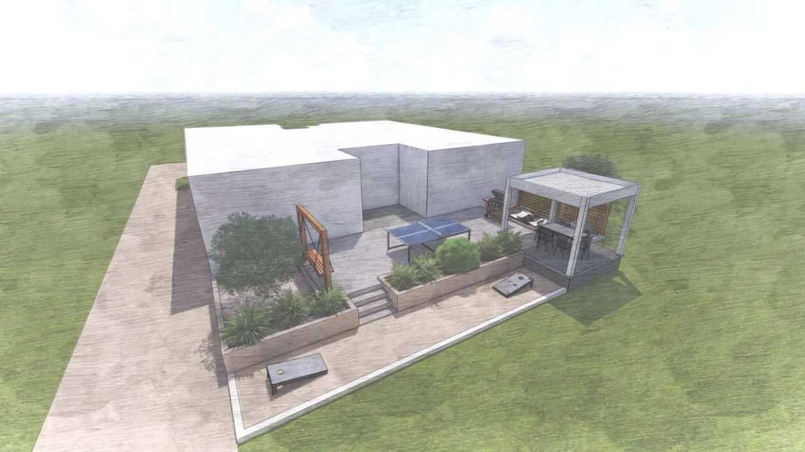
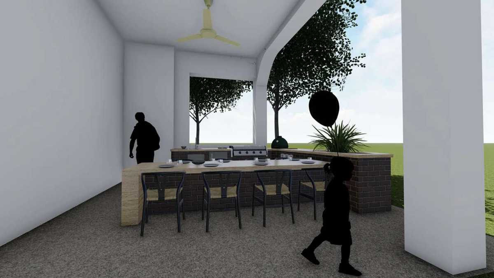
Commercial & multifamily
Amenity spaces residents actually use.
For communities and commercial properties we design and build front entryways, amenity courtyards, pool and recreation areas, courts, outdoor kitchens and seating, dog parks, lighting and area drainage.
- Monthly site audit reports on commercial projects
- Weekly progress reports with photos
- Project management software and scheduled walkthroughs
Recent communities include Cortland Bluff Springs, Griffis at Riata, Parmer Lakeline, Griffis North Austin.
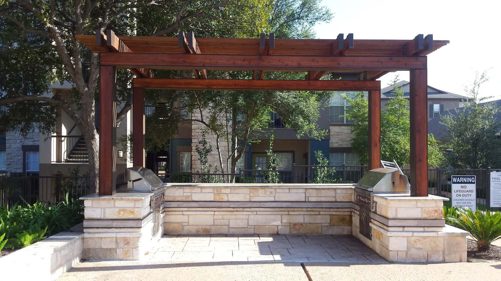
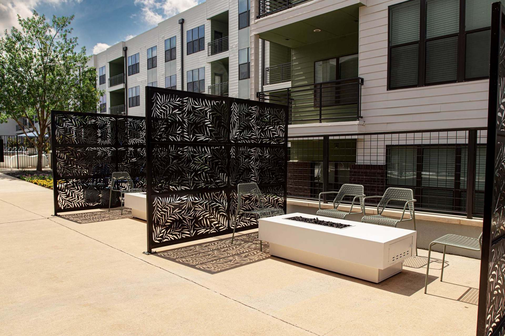
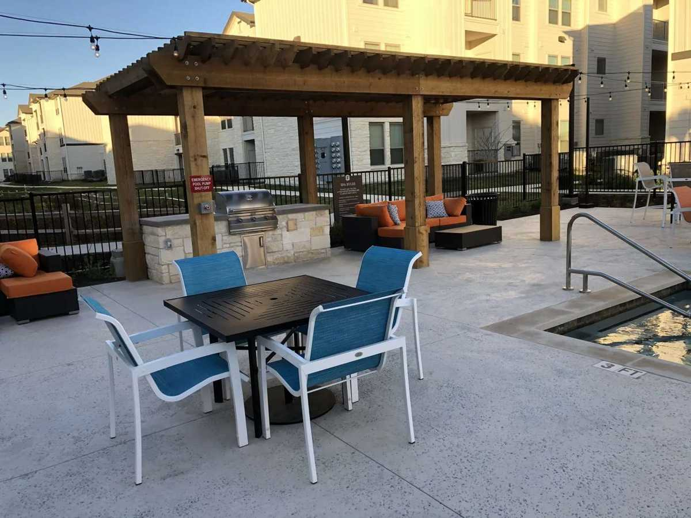
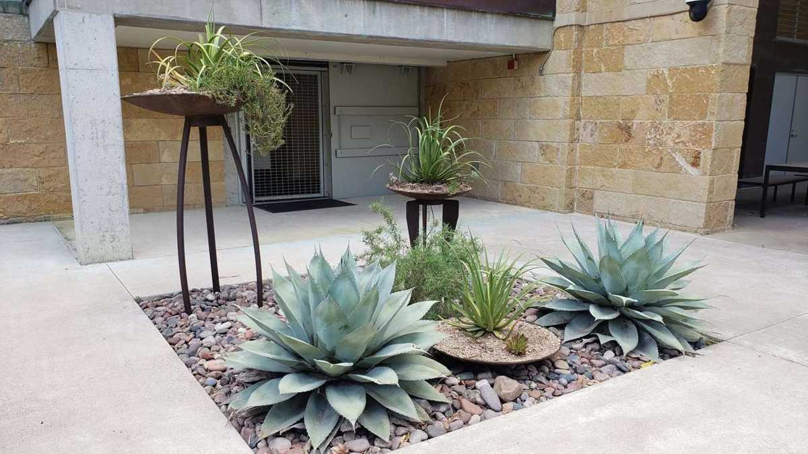
Not sure what your yard needs?
Describe it in a sentence or two and get a starting plan — services, ideas and Finch’s real costs — in seconds.
How it works
From a free consultation to a finished space.
No guessing about what happens next, or what it costs to find out.
- 01Free on-site consultation
We walk the property with you, talk through goals and budget, and explain how design works.
No charge - 02Design
A 2D master plan, then 3D graphics or video so you can see the space before it is built. Revise until it is right.
Fee quoted after consult - 03Build
In-house crews install everything in the plan. Weekly progress reports with photos keep you informed.
Projects from $3,000 - 04Walkthrough
A final walkthrough together, irrigation set for the season, and a space ready to live in.
Handover
Start with a conversation
Let’s talk about your outdoor space.
Your first on-site consultation is free. Call, request a callback, or sketch out your project with the AI planner first.
(512) 934-3891